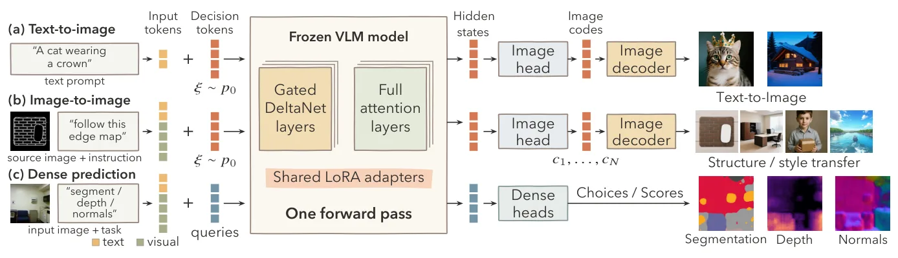
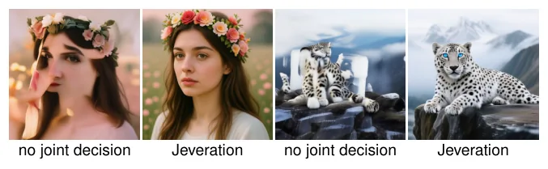

O custo da latência na geração de imagens
Na geração de imagens moderna, dominam dois paradigmas principais: modelos autoregressivos, que geram tokens um por um, e modelos de difusão, que iterativamente removem ruído. Ambos exigem múltiplas avaliações sequenciais do modelo para produzir uma única imagem, o que aumenta significativamente a latência de inferência. Este custo computacional é particularmente relevante em aplicações que exigem resposta em tempo real ou escalabilidade massiva.
O paper Jeveration, de pesquisadores da National University of Singapore, propõe um terceiro paradigma: a geração como uma decisão conjunta em uma única passada (single forward pass). Inspirado nos modelos System One, como o Jev, que retornam decisões rápidas e paralelas (como escolhas ou pontuações), os autores exploram se o mesmo mecanismo pode ser aplicado à síntese de imagens de alta qualidade.
Essa abordagem visa eliminar a necessidade de amostragem sequencial. Em vez de construir a imagem passo a passo, o modelo retorna uma imagem completa como uma decisão única, dado um prompt de texto ou uma imagem de entrada. A ideia central é repurposing o conhecimento visual-semântico adquirido durante o pré-treinamento de grandes modelos vision-language (VLMs) para geração holística.

O desafio da coerência global
A aplicação direta de modelos System One à geração de imagens enfrenta dois desafios críticos. O primeiro é a coerência global. Um único prompt admite muitas imagens válidas, mas decisões paralelas independentes em diferentes posições da imagem podem resultar em regiões incompatíveis. Se o modelo selecionar entradas de um codebook de forma independente para cada posição, ele pode misturar características de diferentes imagens, produzindo resultados incoerentes.
O segundo desafio é a unificação de tarefas. Para que o modelo seja útil, ele precisa acomodar diferentes requisitos de condicionamento, como geração texto-para-imagem, imagem-para-imagem e previsão densa, tudo dentro da mesma arquitetura. Manter a consistência global enquanto se lida com estocasticidade é o cerne do problema técnico apresentado.
Os autores demonstram que a seleção paralela direta falha em capturar as dependências entre os códigos da imagem. A fatoração independente não consegue modelar a correlação total entre as posições, resultando em imagens onde as partes não se encaixam. É necessário um mecanismo que coordenem as decisões paralelas.

Mecanismo: Decisões tipadas e estado aleatório compartilhado
Jeveration aborda a coerência global introduzindo um estado aleatório compartilhado (shared random state), denotado por ξ. Em vez de amostrar códigos independentemente, o modelo condiciona todas as posições de código a este único estado ξ. Embora os códigos sejam amostrados condicionalmente independentes dados (y, ξ), sua dependência compartilhada em ξ permite que a distribuição resultante capture dependências entre as posições.
Essa abordagem transforma a geração em uma decisão conjunta. O VLM processa o input e os tokens de decisão em uma única forward pass. Para geração de imagens, os tokens de decisão começam a partir do estado aleatório ξ. Para previsão densa, eles atuam como consultas espaciais determinísticas. Isso permite que o modelo coorden suas escolhas de código enquanto decide todas as posições simultaneamente.
O modelo base utilizado é o Qwen3.5-4B, que permanece congelado. Jeveration adiciona apenas adaptadores LoRA (Low-Rank Adaptation) compartilhados e heads de saída específicos para tarefas. Essa escolha mantém o conhecimento semântico pré-existente intacto, focando o treinamento na adaptação para a geração paralela.
Treinamento em duas fases para guiar a distribuição
Um problema crítico surge ao treinar o modelo diretamente para gerar imagens: ele tende a ignorar o estado aleatório ξ sob supervisão direta de imagem. Para resolver isso, os autores implementam um treinamento em duas fases. Na primeira fase, eles treinam um modelo para aprender a distribuição de imagens como códigos discretos, criando um guia para a segunda fase.
Na segunda fase, o modelo Jeveration é treinado para produzir decisões paralelas que sejam consistentes com as distribuições aprendidas na primeira fase. O modelo de primeira fase atua como um juiz, fornecendo as distribuições condicionais alvo para a previsão paralela de códigos. Isso ensina o modelo a usar o estado aleatório ξ de forma eficaz para produzir imagens coerentes.
O treinamento combina dados de geração (FLUX-Reason-6M e Qwen-Image) para texto-para-imagem, pares sintéticos de estilo para imagem-para-imagem e o dataset NYUv2 para previsão densa. Os adaptadores LoRA de rank-256 são treinados por cerca de 92k passos na primeira fase e 6.7k na segunda.
Resultados: Velocidade e Qualidade
Os resultados mostram que Jeveration gera uma imagem de 512x512 em 78ms em uma única GPU H200. Isso o torna até 122x mais rápido que o Janus-Pro-7B, um modelo unificado concorrente. Em termos de qualidade, Jeveration atinge um score de 0.74 no GenEval, superando modelos unificados como JanusFlow, Show-o e MMaDA, e sendo competitivo com modelos geradores dedicados como SDXL e PixArt, que exigem múltiplos passos.
Comparado a modelos geradores únicos (one-step) como SANA-Sprint e FLUX.1-schnell, Jeveration mantém uma qualidade comparável ou superior no GenEval, enquanto sendo significativamente mais rápido devido à sua natureza de single forward pass. A latência é medida como a mediana de cinco chamadas end-to-end, incluindo decodificação.
O modelo também demonstra forte fidelidade estrutural em tarefas de imagem-para-imagem. Em geração baseada em bordas HED, profundidade e colorização, Jeveration alcança scores altos de F1 e δ1, indicando que segue bem a estrutura de entrada. A geração estilizada (Anime, Studio Ghibli, Watercolor) também é realizada com sucesso, mantendo o conteúdo solicitado pelo prompt.
Unificação de Tarefas: Geração e Previsão Densa
Uma das contribuições mais significativas do paper é a unificação de tarefas. O mesmo checkpoint do Jeveration suporta geração texto-para-imagem, geração imagem-para-imagem e previsão densa (segmentação, profundidade, normais). Isso significa que uma única arquitetura e um único conjunto de pesos podem lidar com tanto síntese quanto percepção.
Para previsão densa, o modelo é avaliado no dataset NYUv2. Jeveration atinge um mIoU de 67.7 na segmentação, abs.δ1 de 0.898 na profundidade e mean error de 24.2 graus nas normais. Esses resultados são comparáveis a modelos densos dedicados (dense-only) e superam modelos mais antigos como DeepLabV3+. O custo adicional de suportar múltiplas tarefas é mínimo, sem degradação significativa na qualidade de geração de imagens.
Essa unificação demonstra que o paradigma de decisões tipadas é flexível. Para tarefas determinísticas como previsão densa, os tokens de decisão atuam como consultas espaciais, enquanto para geração estocástica, eles são condicionados ao estado aleatório. O modelo aprende a alternar entre esses modos sem necessidade de arquiteturas separadas.
Limitações e Escopo
Apesar dos resultados promissores, o paper tem limitações. A qualidade da imagem, embora competitiva, ainda não atinge o nível dos maiores modelos de difusão ou autoregressivos de última geração em métricas subjetivas ou de alta fidelidade detalhada. O modelo é avaliado principalmente em resoluções de 512x512, e a escalabilidade para resoluções muito maiores não é o foco principal deste trabalho inicial.
O treinamento depende de um modelo de primeira fase para guiar a distribuição, o que adiciona uma etapa de complexidade ao pipeline de treinamento. Além disso, o uso de um VLM congelado limita a capacidade do modelo de aprender novos conceitos visuais complexos sem um fine-tuning adicional significativo, embora os adaptadores LoRA ajudem a mitigar isso.
Os experimentos focam em tarefas visuais específicas. A extensão do paradigma para outras modalidades (áudio, vídeo) ou tarefas mais complexas de raciocínio visual permanece como trabalho futuro. O paper estabelece a viabilidade, mas não resolve todos os desafios de geração de alta qualidade em tempo real.
Conclusão
Jeveration apresenta uma nova abordagem para geração de imagens, demonstrando que modelos System One podem gerar imagens de alta qualidade em uma única passada. Ao condicionar posições de código a um estado aleatório compartilhado e usar um treinamento em duas fases, os autores superam o desafio da coerência global.
O modelo unifica geração e previsão densa em um único checkpoint, oferecendo uma alternativa eficiente em termos de latência para aplicações que exigem resposta rápida. Com 78ms por imagem em uma H200, Jeveration abre caminho para novas aplicações em tempo real que eram impraticáveis com paradigmas sequenciais ou iterativos.
Este trabalho sugere que o conhecimento visual-semântico de VLMs pode ser repurposed para geração, expandindo o escopo de modelos originalmente projetados para compreensão e decisão. A eficiência e a unificação de tarefas tornam Jeveration uma contribuição relevante para a interseção entre geração de imagens e inferência rápida.
O que fica
- Jeveration gera imagens em uma única forward pass, sendo até 122x mais rápido que modelos unificados concorrentes.
- A coerência global é garantida condicionando todas as posições a um estado aleatório compartilhado.
- Um único checkpoint realiza geração texto-para-imagem, imagem-para-imagem e previsão densa.
- O modelo base (Qwen3.5-4B) permanece congelado, com apenas adaptadores LoRA treinados.
Paper original: Jeveration: System One Models Now Generate
Comentários
Nenhum comentário ainda. Seja o primeiro.